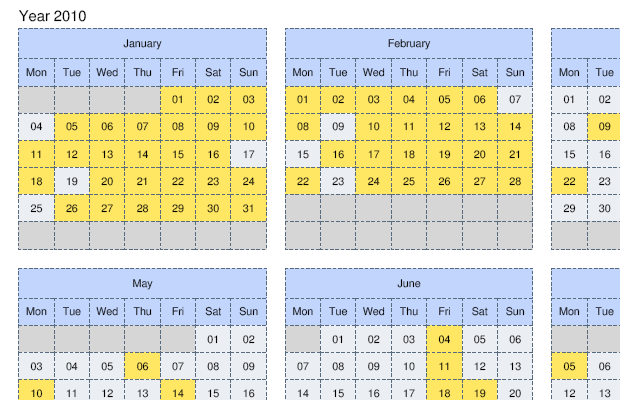
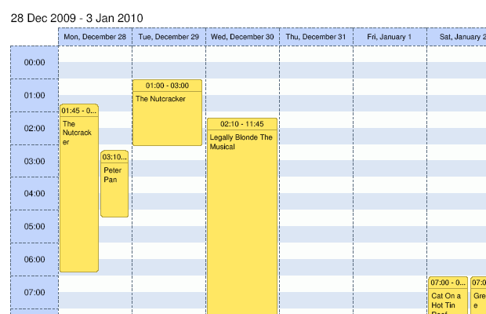
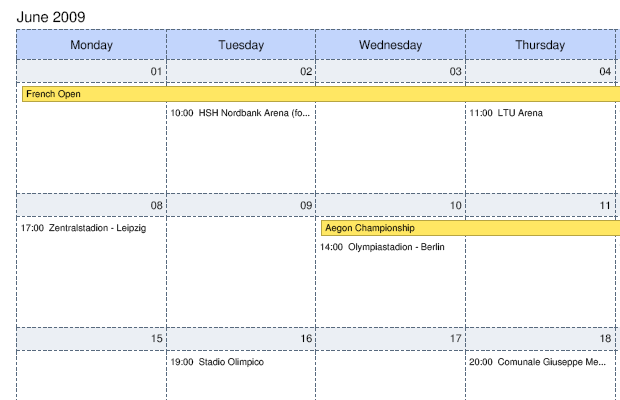

Export to PDF
Installation
Grab the latest package from http://www.dhtmlx.com/docs/download/dhtmlxscheduler-to-pdf.zip
Unpack it somewhere under the web root ( you will need to enable php for this installation )
Necessary includes
On the scheduler page you need to include one more extension
<script src="codebase/ext/dhtmlxscheduler_pdf.js"></script>
In older versions of scheduler this file can be missing in the codebase folder, in such a case you may use the dhtmlxscheduler_pdf.js from the latest package.
Printing triggering
To export scheduler data to PDF you just need to add the button on the page, which will call the toPDF method. The parameter of toPDF method is the url of the script, which has been installed previously:
<input type="button" name="save" value="save" onclick="scheduler.toPDF('path/to/folder/generate.php')" style="right:300px; width:80px; position:absolute; top:1px;">



Configuring service
Client side options
The only thing, which can be controlled on client side is color-map of image. You can choose between
- “color” - full color printing, used by default
- “gray” - print in shades of black and white
- “bw” - uses only black and white colors
- “custom” - can be used to enabled custom color map ( will require php coding, check below )
scheduler.toPDF('path/to/folder/generate.php','gray');
Server side options
generate.php contains a code, similar to the next
$scPDF = new schedulerPDF(); $scPDF->printScheduler($xml);
You can apply some custom configuration options , before executing printScheduler
Size of elements
// header height of day container in month mode $scPDF->monthDayHeaderHeight = 6; // header height in month mode $scPDF->monthHeaderHeight = 8; // height of month name container in year mode $scPDF->yearMonthHeaderHeight = 8; // height of row in agenda mode $scPDF->agendaRowHeight = 6; // height of header in day and week mode $scPDF->dayTopHeight = 6; // width of left scale in day and week mode $scPDF->dayLeftWidth = 16;
Font size
// font size settings $scPDF->monthHeaderFontSize = 9; $scPDF->monthDayHeaderFontSize = 8; $scPDF->monthEventFontSize = 7; $scPDF->yearHeaderFontSize = 8; $scPDF->yearFontSize = 8; $scPDF->agendaFontSize = 8; $scPDF->dayHeaderFontSize = 7; $scPDF->dayScaleFontSize = 8; $scPDF->dayEventHeaderFontSize = 7; $scPDF->dayEventBodyFontSize = 7; $scPDF->todayFontSize = 11;
Custom colors ( be sure to use “custom” as name of color map on client side )
$scPDF->lineColor = '586A7E'; $scPDF->bgColor = 'C2D5FC'; $scPDF->dayHeaderColor = 'EBEFF4'; $scPDF->dayBodyColor = 'FFFFFF'; $scPDF->dayHeaderColorInactive = 'E2E3E6'; $scPDF->dayBodyColorInactive = 'ECECEC'; $scPDF->headerTextColor = '2F3A48'; $scPDF->textColor = '2F3A48'; $scPDF->eventTextColor = '887A2E'; $scPDF->eventBorderColor = 'B7A543'; $scPDF->eventColor = 'FFE763'; $scPDF->todayTextColor = '000000'; $scPDF->scaleColorOne = 'FCFEFC'; $scPDF->scaleColorTwo = 'DCE6F4'; $scPDF->yearDayColor = 'EBEFF4'; $scPDF->yearDayColorInactive = 'd6d6d6';
Header and Footer
It possible to define custom header and footer for each page.
- create images with names as “header.png” and “footer.png”
- copy those images to the same folder where generate.php resides
- on client side , change code call as
scheduler.toPDF(url, "color", true, true);
As result you will have content of “header.png” and “footer.png” as header and footer on all pages in the generated pdf file.
Error reporting
If output of PDF file is failed, there must be file named as “error_report_xxxx.xml”, please send this file with any bug-reports.
If output doesn't fail, but still has some problems, you can edit generate.php and change
$debug = false;
as
$debug = true;
As result, there will be a new file saved, with name as “debug_xxxxx.xml” - please send it with related error report.
All rights reserved.